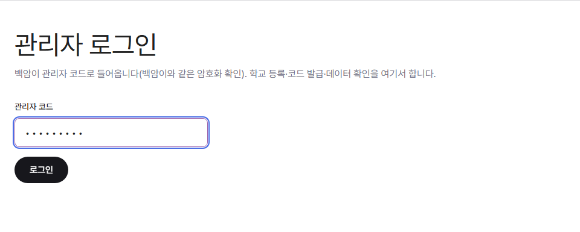
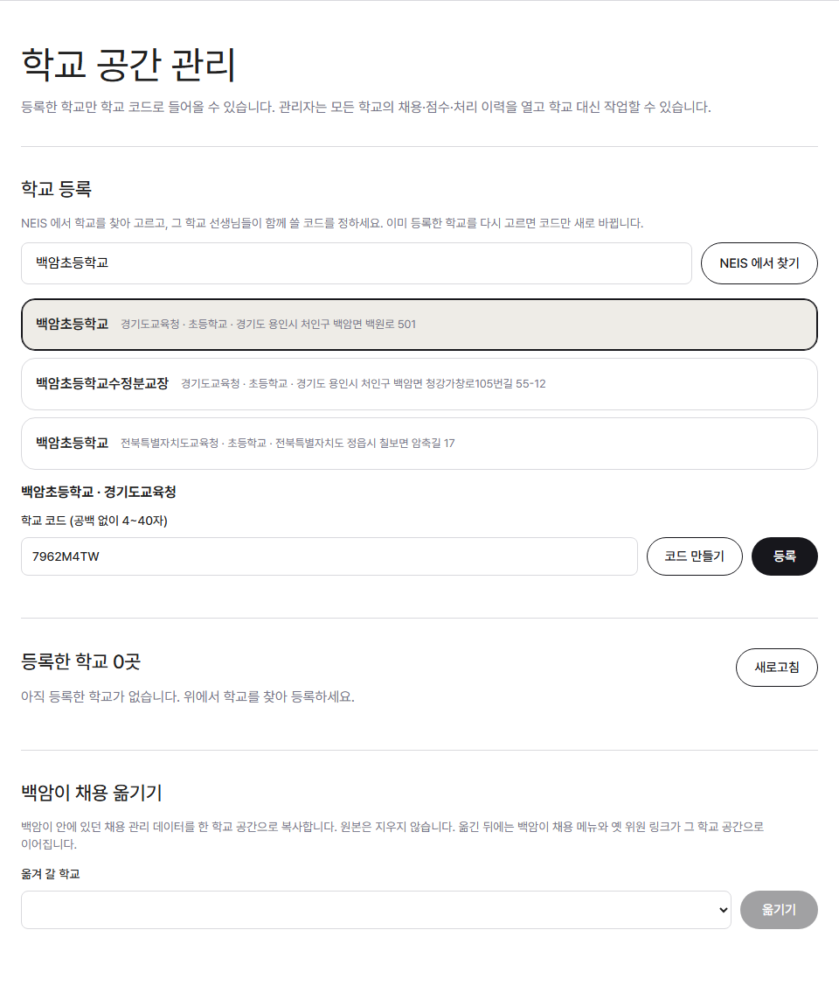
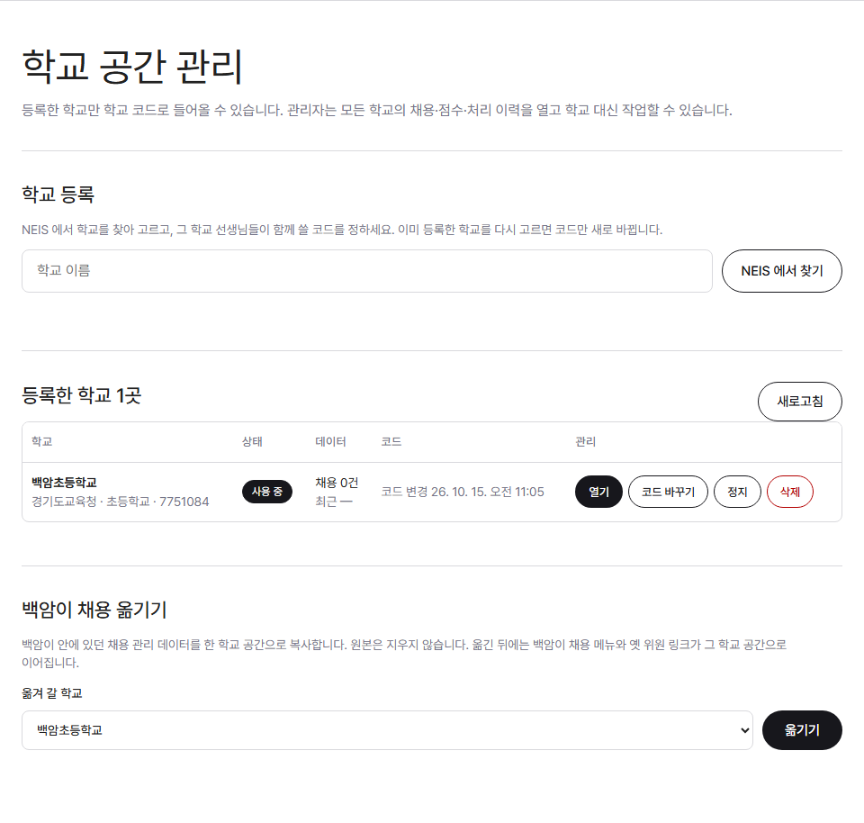

학교 등록 · 학교 코드 · 정지 · 전체 데이터 확인
백암이 관리자 코드
NEIS 에서 찾고 학교 코드 정하기
학교 담당 선생님께
열기 · 코드 바꾸기 · 정지 · 삭제
등록하지 않았거나 정지한 학교는 들어올 수 없어요. 등록한 학교는 각자 자기 공간과 데이터만 봐요.
01
/hub/admin

주소 a-iroom.vercel.app/hub/admin. 백암이 관리자 코드로 들어와요(백암이와 같은 암호화로 확인, 따로 비밀번호를 두지 않아요). 학교 코드처럼 10번 틀리면 그 기기가 금지돼요.
02
NEIS 에서 찾고, 학교 코드를 정해요

학교 이름으로 찾으면 교육청·주소가 함께 나와요(이름이 같은 학교를 구별). 학교를 누르고 「코드 만들기」나 직접 정한 코드로 「등록」. 코드는 등록할 때 한 번만 보여 주니 바로 전해 주세요.
03

「열기」는 그 학교 채용 관리를 관리자로 열어요(모든 채용·점수·이력 확인, 대신 작업 가능). 「코드 바꾸기」는 이전 코드를 바로 막아요. 「정지」하면 학교 사람·위원 모두 못 들어오고 데이터는 남아요.
등록만 지우거나, 채용 데이터까지 함께 지울지 고를 수 있어요. 데이터 삭제는 되돌릴 수 없어요.
백암이 안에 있던 채용을 한 학교 공간으로 복사해요. 원본은 남고, 백암이 채용 메뉴와 옛 위원 링크는 그 학교 공간으로 이어져요.
학교 공간끼리는 서로 볼 수 없어요. 관리자만 모든 학교를 열 수 있어요.
관리자는 모든 학교를 확인하고 검증해요